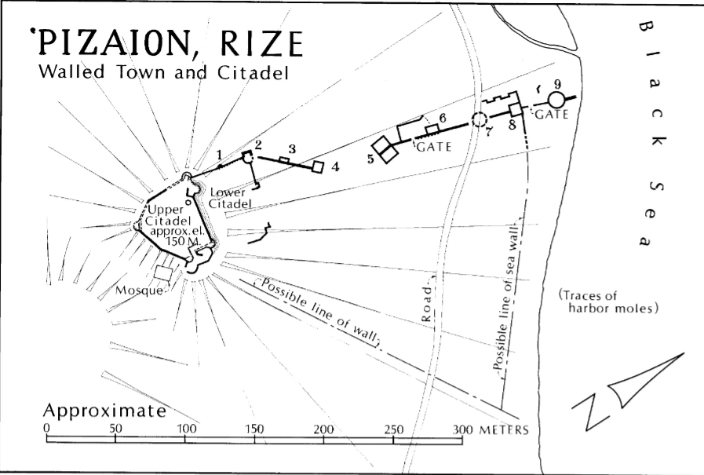
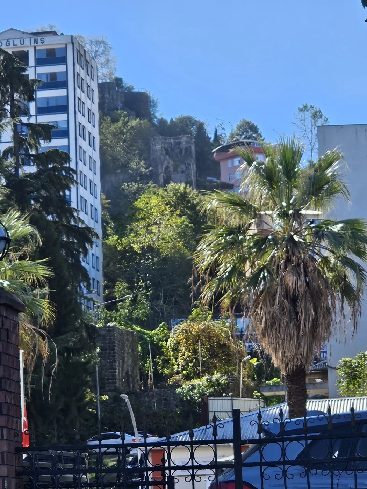
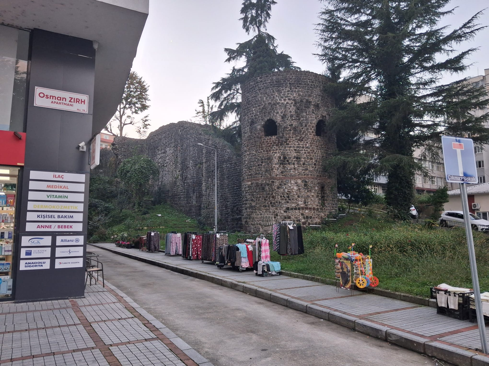

Kaybolan İzleri Görünür Kılmak:Rize Kalesi’nin Dijital Rekonstrüksiyonu ve Kültürel Miras Eğitiminde Kullanımı
İlk kez katılıyorsan ön testi tamamla. Ardından bu sayfaya dön ve aynı katılım koduyla platforma gir.
Kaleyi belgelerden tanı
Planı ve iki rölöve çizimini incele. Ayrıntıları görmek için belgeyi büyütebilirsin.

Tarihsel plan ve belgeler
Yanıtını tamamladığında açıklama açılır ve yanıtın düzenlemeye kapanır. Kaydetmek için pilot katılım kodunla oturum aç.Belgelere birlikte bakalım
Batı silüetinde sur kesimlerinin farklı yüksekliklerde olduğu görülür. Planda bu kesimlerin birbirlerine göre konumlarını, silüette ise yamacın biçimini inceleyebilirsin.
Bugünkü kale alanını incele
Görünümler arasında geçiş yaparak aynı yeri incele. Yakınlaştırmak için + düğmesini kullan, alanı gezmek için görüntüyü sürükle.
Sarı: yaklaşık tarihsel alan · Pembe: binalar · Gri: ana yollar · Yeşil: kale kesimleri
Rize Kalesi’nin mevcut durumu*


Sur duvarlarına yakından bak
Rapor fotoğrafları ve onları izleyen altı saha fotoğrafı restorasyon öncesine aittir. Son dört fotoğraf restorasyondan sonra dronla çekilmiştir. Ayrıntıları görmek için fotoğrafları büyütebilirsin.
Restorasyon öncesi · Rapor fotoğrafları
Restorasyon öncesi · Saha fotoğrafları
Restorasyon sonrası · Dron çekimleri
Günümüzle karşılaştırma
Yanıtını tamamladığında açıklama açılır ve yanıtın düzenlemeye kapanır. Kaydetmek için pilot katılım kodunla oturum aç.Belgelere birlikte bakalım
Proje ekibi, saha incelemesinde bu burcu tarihsel plandaki 9 numaralı işaretle eşleştirmiştir. Çevredeki yapılar ve bitki örtüsü, sokaktan bakıldığında surları bir bütün olarak görmeyi güçleştirir. Burcun burada ayakta olması, plandaki kıyı ucunu günümüz kentinde tanımamızı sağlar. Tüm sur hattının güzergâhı için başka kanıtlar gerekir.
Raporda duvar örgüsündeki ayrılmalar, malzeme kaybı ve taşların arasında büyüyen bitkiler belgelenir. Ayrıca Dış Surlar 1’in batı duvarının bir bölümünün 2007’de yıkıldığı kaydedilir. Fotoğraflarda bu yıkımın yeri tek tek işaretlenmemiştir.
Rize Kalesi, Kültür ve Turizm Bakanlığının envanterinde anıtsal koruma derecesi 1 olarak kayıtlıdır. Kalenin envanter kaydı
3B rekonstrüksiyonu keşfet
Bu üç boyutlu canlandırma, tarihsel plan ve belgelerden yararlanarak kalenin geçmişte nasıl görünmüş olabileceğini gösterir. Modeli döndürmek için sürükle. Bir noktayı seçerek o bölüme yaklaş.
Dijital rekonstrüksiyon
Yanıtını tamamladığında açıklama açılır ve yanıtın düzenlemeye kapanır. Kaydetmek için pilot katılım kodunla oturum aç.Belgelere birlikte bakalım
Örneğin Aşağı Kale’nin adı ve konumu planda görülebilir. Avludaki yapıların çatı biçimlerini aynı plandan belirlemek güçtür. Kıyı suru da planda olası bir hat olarak işaretlenirken modelde kesintisiz bir duvar biçiminde gösterilir.
Üç aşamayı tamamladın. Son teste geçebilirsin.
Son teste katıl